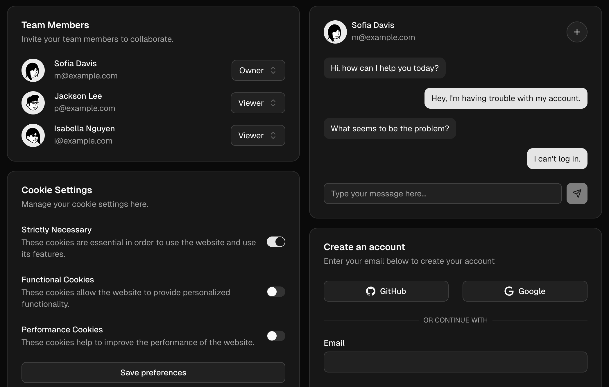
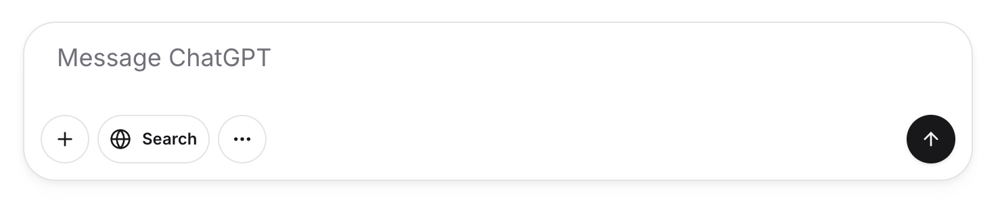

— Brian Moeskau (@bmoeskau)
— Ted Patrick (@__ted__)
Expedia is always hiring! expediajobs.com
Material’s latest evolution helps you make products even more engaging and easier to use.
Build reactive web applications with the simplicity of server-side rendering and the power of a full-stack SPA framework.
All of the shadcn/ui magic, none of the React.
A components library built with Tailwind CSS that works with any web stack.

Float16ArrayNew JS array type that stores 16-bit (2-byte) floating point numbers
Float32Array and Float64ArrayPublished May 20
See baseline stats inline as of v1.100:
https://github.com/mozilla-firefox/firefox
The world’s first browser with mindfulness at its core.
Published May 6
Updated ahead of Google I/O
Published May 22
Next generation Claude models:
Customizable, high-quality components for AI applications.
Input:
import {
PromptInput,
PromptInputTextarea,
PromptInputAction,
} from '@/components/ui/prompt-input';
function PromptInputBasic() {
return (
<PromptInput>
<PromptInputTextarea placeholder='Message ChatGPT' />
<PromptInputActions>
<PromptInputAction tooltip='Upload File'>
<Button>Upload File
</PromptInputAction>
<PromptInputAction tooltip='Send'>
<Button>Send
</PromptInputAction>
</PromptInputActions>
</PromptInput>
);
}
Customizable, high-quality components for AI applications.
Output:

Published April 14
TLS certificate lifetimes will officially reduce to 47 days
Published May 1
Published May 2
WCAG 3.0 isn’t just an update — it’s a paradigm shift.
Published May 21
It's been over a year since ESLint v9.0.0 was released... What went well, what didn't, and what we've learned.
After 5 years in development, 9.0 "didn't work" and "broke the ecosystem". Why?
Brian Moeskau